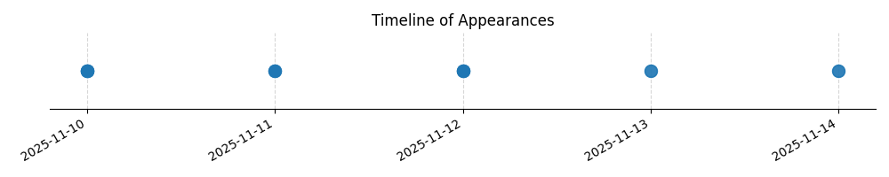

Kategorie: Letecké předpisy
Tato otázka se zabývá povinnostmi velitele letadla v případě ztráty spojení s řízením letového provozu na neřízeném letišti nebo v případě absence AFIS/Flight Information Service. Předpisy pro takové situace specifikují postup, který je popsán v možnosti B, tedy vysílání informací o poloze a záměrech na příslušném frekvenčním pásmu letiště. Ostatní možnosti (odlet na náhradní letiště nebo přistání bez spojení) nejsou v tomto kontextu standardním ani bezpečným postupem dle platných leteckých předpisů.

| Datum výskytu |
|---|
| 2025-11-14 |
| 2025-11-13 |
| 2025-11-12 |
| 2025-11-11 |
| 2025-11-10 |